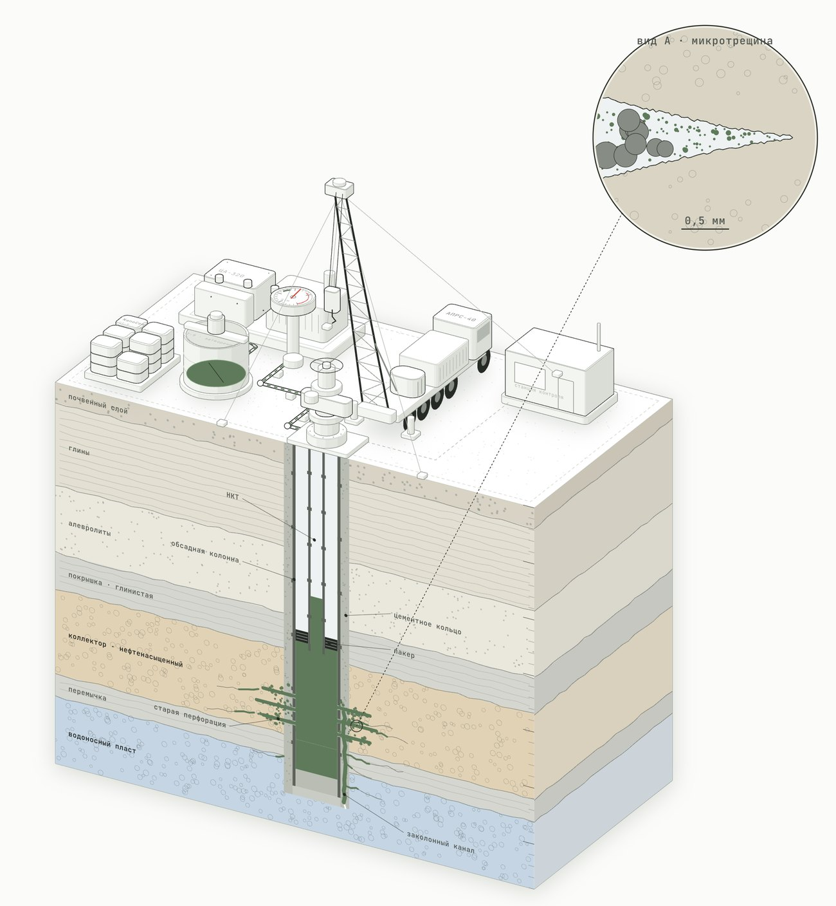
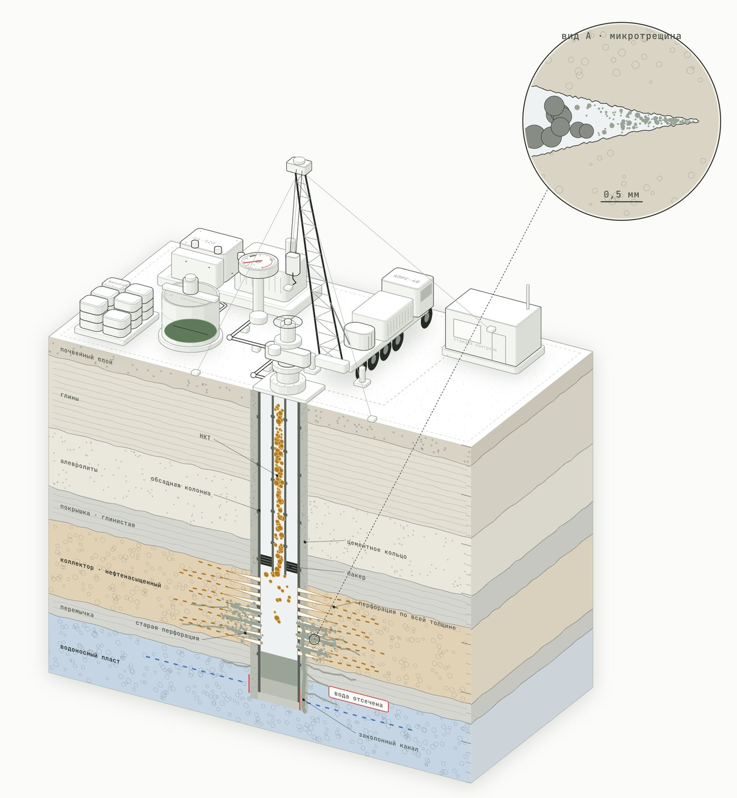

Проникновение
Частицы мельче 9 мкм входят
в микротрещины.
Ультратонкая изоляционно-инъекционная сухая смесь
Отсекает водопритоки в нефтяных скважинах: проникает в микротрещины и твердеет в прочный водонепроницаемый камень.
01 / О компании
EASYMIX · АктобеТОО «ЭкоМикс» — производственная компания из Казахстана, г. Актобе. Под брендом EASYMIX выпускает NanoCem UT-9.
Основное направление — ремонтно-изоляционные работы в нефтяных скважинах: отсечение водопритоков, изоляция интервалов и восстановление продуктивности осложнённого фонда.
02 / Продукт
NanoCem UT-9 — ультратонкая изоляционно-инъекционная сухая смесь для цементажа под давлением.
Главное отличие от обычных цементов — тонкость помола: D95 ≤ 9 мкм, D50 ~3,5 мкм. Подавляющая часть частиц мельче 9 микрон, поэтому смесь проникает туда, где стандартный цемент физически не проходит, — в микротрещины, низкопроницаемые коллекторы (0,01–1 мД), тонкие каналы фильтрации.
Частицы мельче 9 мкм входят
в микротрещины.
После твердения марка М500, 65–75 МПа за 28 суток.
Устойчив к нефти, солевым растворам
и сульфатам.
03 / Принцип
Обычная цементная суспензия в тонкие каналы не входит: частицы слишком крупные и кольматируют устье трещины, не заполняя её.
Ультратонкая смесь проникает в глубину и образует сплошной водонепроницаемый экран, а после твердения работает как конструкционный камень — сочетая проникающую способность инъекционных растворов с прочностью цемента.
04 / В пласте
Заход с АПРС-40 · объект J1-IV

ВНК поднимается конусом к перфорации, вода идёт за колонной по слабому цементу.
Сухая смесь затворяется водой в ёмкости.
Агрегат подаёт смесь в НКТ, интервал J1-IV отсечён пакером.
Частицы ≤ 9 мкм входят в перфорацию, поры песчаника до ВНК и канал за колонной.
Камень: экран над ВНК и новое кольцо за колонной, давление держится 25–35 атм.
Перфоратор простреливает нефтенасыщенную часть J1-IV выше экрана.
Нефть идёт без воды: ВНК отсечён экраном, переток перекрыт кольцом.
Анимация всех этапов: nanocem.vercel.app/#reservoir
05 / Применение
Проникнуть в каналы поступления воды, отсечь их и закрепить — не выключая из работы нефтенасыщенную часть пласта.
Ликвидация водопритоков в эксплуатационных скважинах
Изоляция заколонных перетоков
Восстановление герметичности цементного кольца
Герметизация зон потери циркуляции
Укрепление слабосцементированных коллекторов
Инъекция в интервалы с микротрещинами
Отсечение отдельных интервалов и пластов
Цементаж под давлением, изоляционные мосты
06 / Характеристики
| Внешний вид | Порошок серого цвета |
| D50 | ~3,5 мкм |
| D95 | ≤ 9 мкм |
| Плотность сухого продукта | 2,95 г/см³ |
| Плотность суспензии | 1,85–1,95 г/см³ |
| Водосодержание (В/Т) | 0,55–0,80 |
| Свободная вода | ≤ 0,5% |
| Прочность через 24 ч | ≥ 12 МПа |
| Прочность через 28 сут | 65–75 МПа |
| Марка прочности | М500 |
| Жизнеспособность раствора | 4–5 часов |
| Время первичного твердения | ~60 мин |
| Полное твердение | 24 ч при +25 °C |
| Температурный диапазон | +5…+120 °C |
| Адгезия к бетону, не менее | ≥ 2,5 МПа |
| Водонепроницаемость | W14–W16 |
| Морозостойкость | F75–F100 |
| Химическая стойкость | нефть, соли, сульфаты |
| Толщина слоя | 5–100 мм |
| Упаковка | мешки 25 кг · биг-бэги 1000 кг |
Гарантийный срок хранения — 12 месяцев со дня изготовления.
07 / Технология
Определение источника обводнения по промыслово-геофизическим исследованиям, расчёт объёма закачки.
Промывка и шаблонирование, спуск НКТ, установка пакера на границе интервала.
Затворение на пресной воде при В/Т 0,55–0,80, контроль плотности 1,85–1,95 г/см³.
Продавка расчётного объёма, проникновение смеси в каналы фильтрации на всю глубину.
Первичное твердение ~60 мин, полное — 24 ч при +25 °C. Через 28 сут — 65–75 МПа.
Разбуривание, опрессовка, вывод на режим, контроль дебита по нефти и обводнённости.
08 / Результаты
01.01–17.07.2026 · план–фактРемонтно-изоляционные работы выполнены на четырёх скважинах нефтяного фонда. На всех получено кратное снижение обводнённости и восстановление добычи по нефти.
| Скважина | Обводнённость до | После | Нефть до, т/сут | После, т/сут |
|---|---|---|---|---|
| X-1 | 94,8% | 36,8% | 0,58 | 10,41 |
| X-2 | 88,4% | 30,1% | 1,20 | 9,76 |
| X-3 | 85,2% | 35,8% | 2,71 | 13,70 |
| X-4 | 98,4% | 21,8% | 0,12 | 2,33 |
До — худший месяц перед ремонтом, после — среднее за июль 2026. Номера скважин обезличены.
09 / Контакты
Запросите технический лист и коммерческое предложение под вашу задачу.